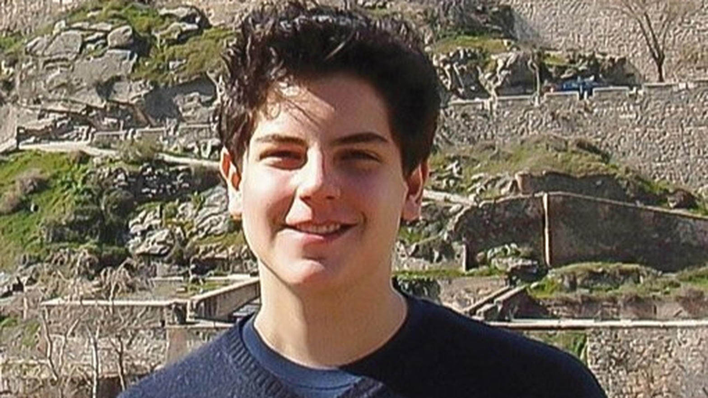
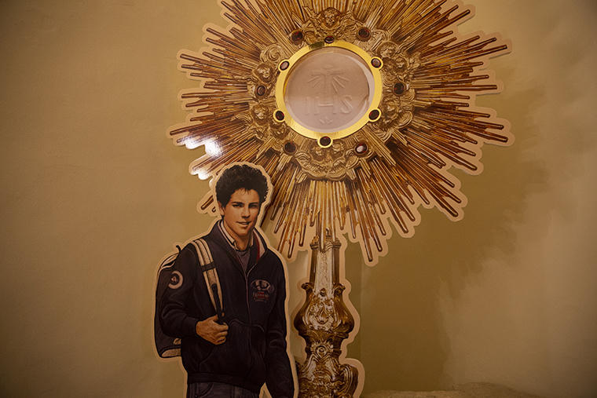

Quem foi
Carlo nasceu em Londres e cresceu em Milão. Gostava de computador, futebol e videogame, e ia à missa todos os dias. Com 11 anos começou a catalogar milagres eucarísticos do mundo num site que ele mesmo montou, para mostrar que a presença de Cristo no altar não é uma ideia, é um fato.
Aos 15 anos foi diagnosticado com leucemia. Ofereceu o sofrimento pelo Papa e pela Igreja. Morreu em 12 de outubro de 2006. Foi beatificado em Assis em 2020 e canonizado em 2025: o primeiro santo da geração da internet.
«A tristeza é o olhar voltado para si. A felicidade é o olhar voltado para Deus.»

Oração
São Carlo Acutis, jovem que fizeste da Eucaristia o centro da tua vida, ensina-nos a encontrar Jesus na missa e no silêncio.
Intercede por nós para que usemos o tempo, a tecnologia e o coração a serviço do bem, e não nos fechemos em nós mesmos.
Alcança-nos a graça que te pedimos, e a coragem de dizer, como tu: a Eucaristia é a minha autoestrada para o céu.
Amém.